Private preview/handoff
Redesigning LottieFiles’ animation preview and handoff experience
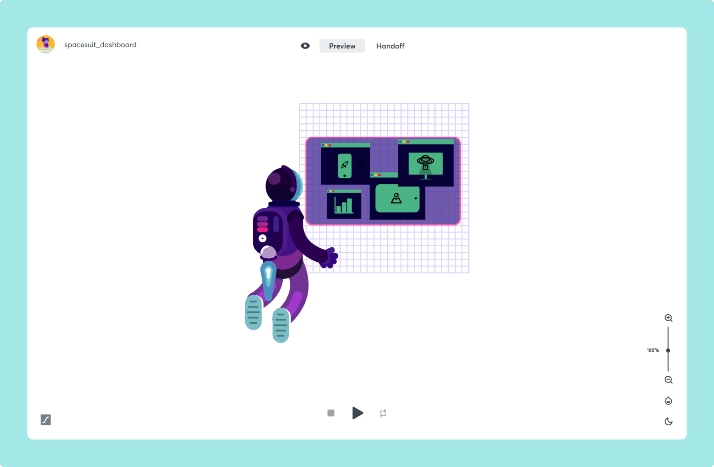
Role
Product Designer
Year
August 2020
Overview
LottieFiles is the biggest hub of everything lottie you need today. It offers people a large collection of lottie animations and all the tools you need to preview, export, test and implement your animations. Our community is the most important thing for us, everything we do is to provide them a better workflow and to bring visibility for those who create lottie animations.
Animations can be previewed in two ways: privately by default and if the uploader wants it, can be pushed to public view and found through the search bar and community animations.
Companies who work internally with lottie animations use the private sharing feature as a way to send files across people in their teams. Through a private link one can access a preview of the animation, a QR code to test the same animation in their mobile devices and a download button to get access to the original .json in order to implement the file.
A page that can be used to its full potential according to the divergent segments that use it.
After a few months collecting data from surveys, we were able to identify 3 main types of users in the LottieFiles platform: Designers, Developers and Stakeholders. The user statements were made through conversation with key users and a few assumptions.
Designer
As a user, I want to test if my animations are working correctly across different devices as well as in different background colors.
Developer
As a user, I am looking to get access to the animation .json file and embed code. I also want to look at detail information as file size, resolution, bounding box and fps.
Stakeholder
As a user, I receive a lot of animations to approve. I want to be able to look at it in the simplest, easiest and quickest way possible to continue with my daily tasks.
Problem statement and goals
The current share private file page is too broad and loses potential for the lack of focus on the specific segments. Thus it doesn't make use of design to enhance the animation viewing experience.
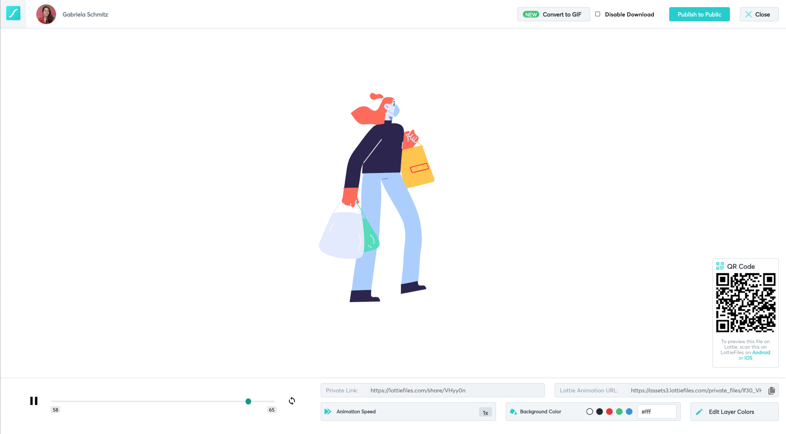
Old version to be improved
Goal #1 Improve animation viewing experience.
Bring the main focus to the animation experience to enhance its preview.
Goal #2 Separate user segments
To find a way to segment the page in a way that benefits the 3 types of users.
Goal #3 Provide a better handoff
Improve the way animations are handed for developers to implement them.
I decided to look for products that delivered a similar handoff purpose for example Protopie, Avocode, Zeplin and Abstract and analyse how exactly they display content and organize user preferences. I also looked at animation apps like Looom for a better view of the interface for animation.
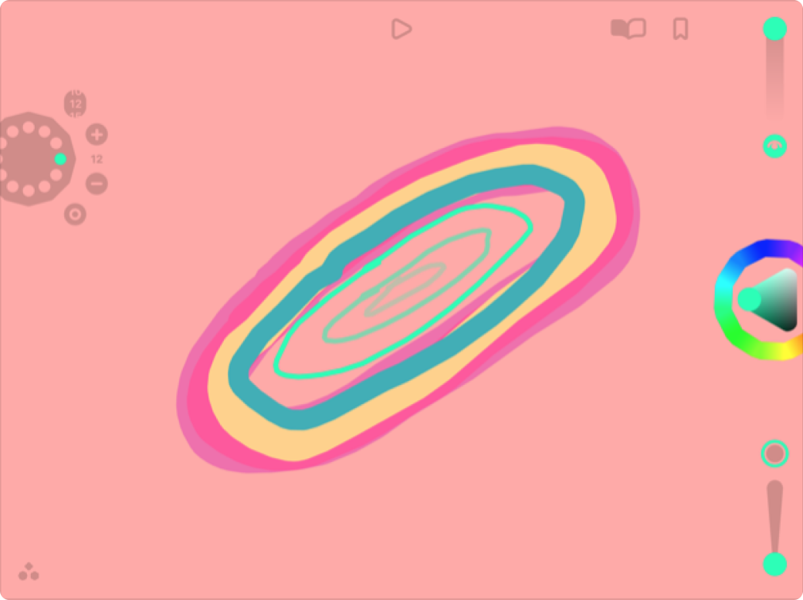
Looom app to quickly create animations on iPad. Biggest highlight is the very simple and dynamic UI elements that adapt according to the background color.
Together with my boss, we sat down together to go through and define the features we will present in this page. Making sure we don’t overlap features that are planned to be available in other products currently in the roadmap. I created a chart in notion tagging all features according to its availability (taking in consideration logged and non-logged users) and type of action so we could keep track and don’t get lost in the process.
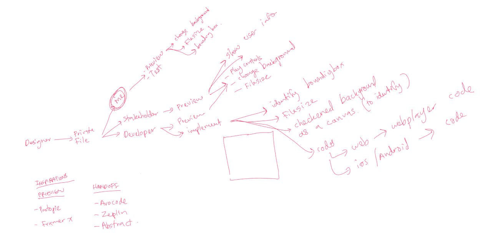
Meeting notes. Talking through the features.
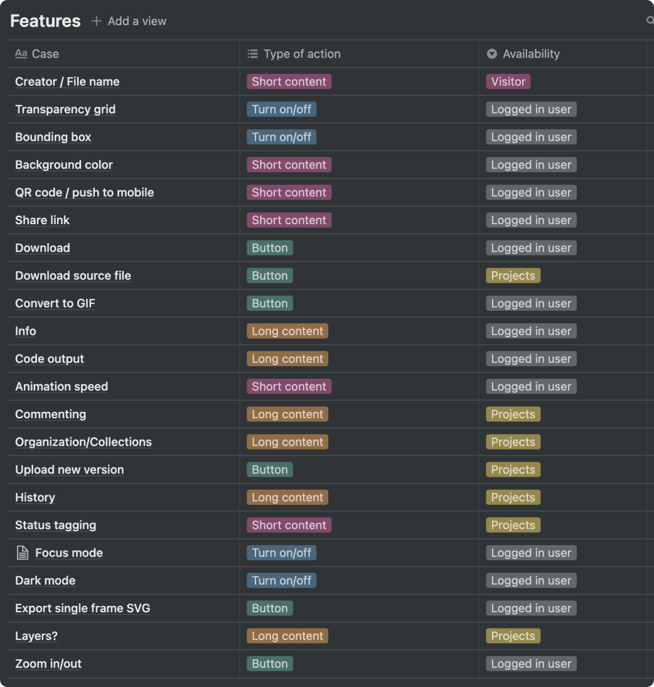
Making sure to keep track of all features according to project.
My design exploration started with placing all the features roughly without much thought and then doing an exercise to declutter the page as much as possible to bring the main focus to the animation itself.
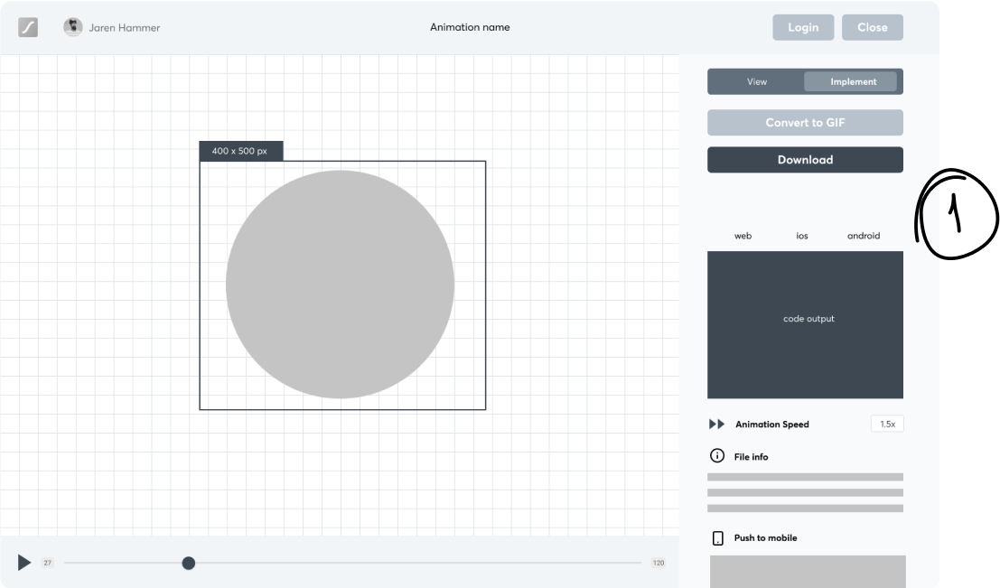
Placing elements and required features.
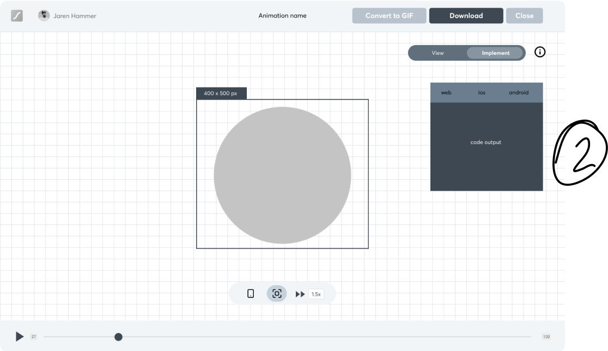
Playing around with floating menus and other compositions.
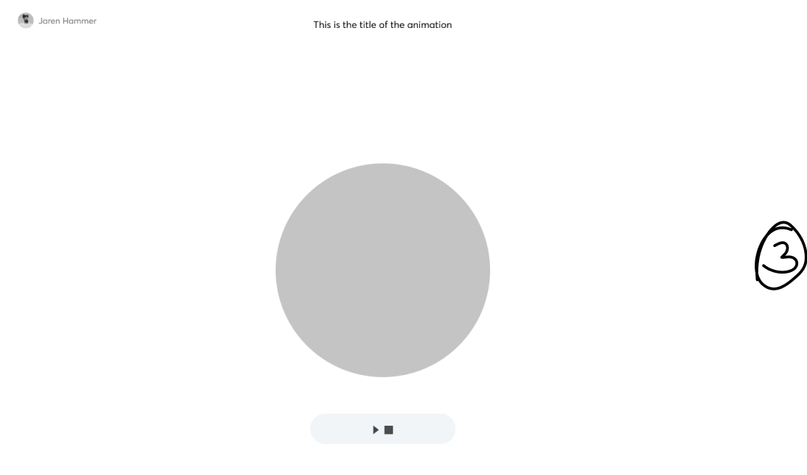
Removing as much elements as possible.
After wireframes, medium level exploration and technical validations with developers - we could agree with a final design:
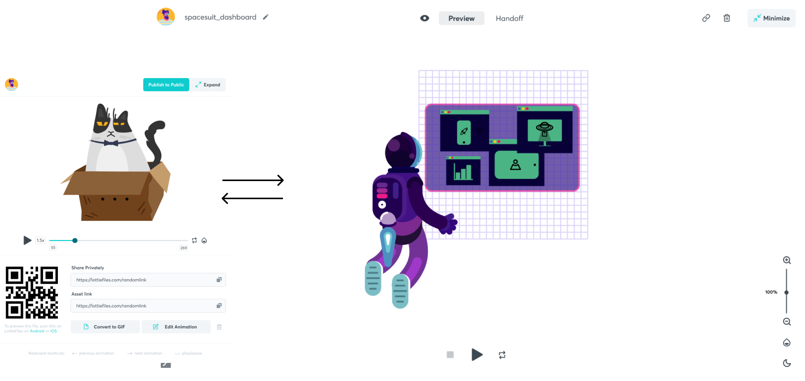
For the uploader only: quick modal from your library of uploaded animations.
Clicking expand on top right takes you to the full screen version.
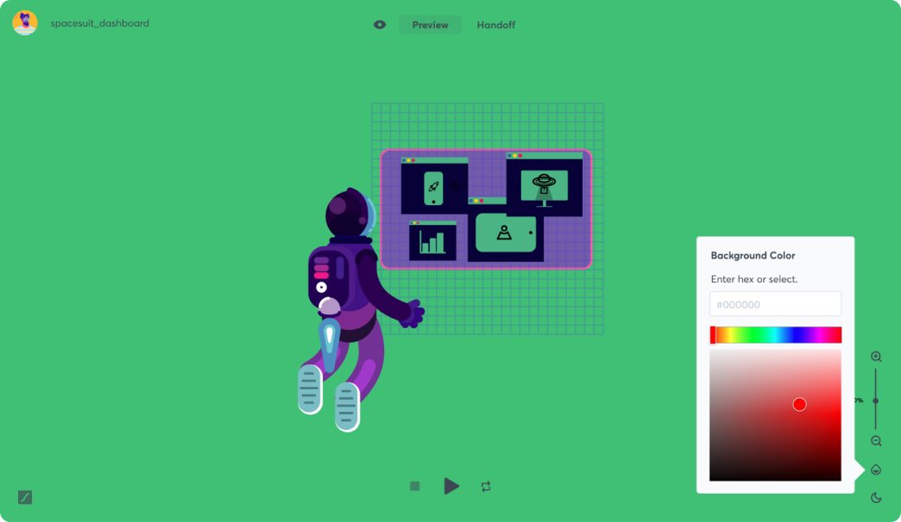
Background color application
There is three possible ways people can access to this page:
1. Receiving the link from someone else
2. Uploading a new animation
3. Re visiting an animation from “my previews”
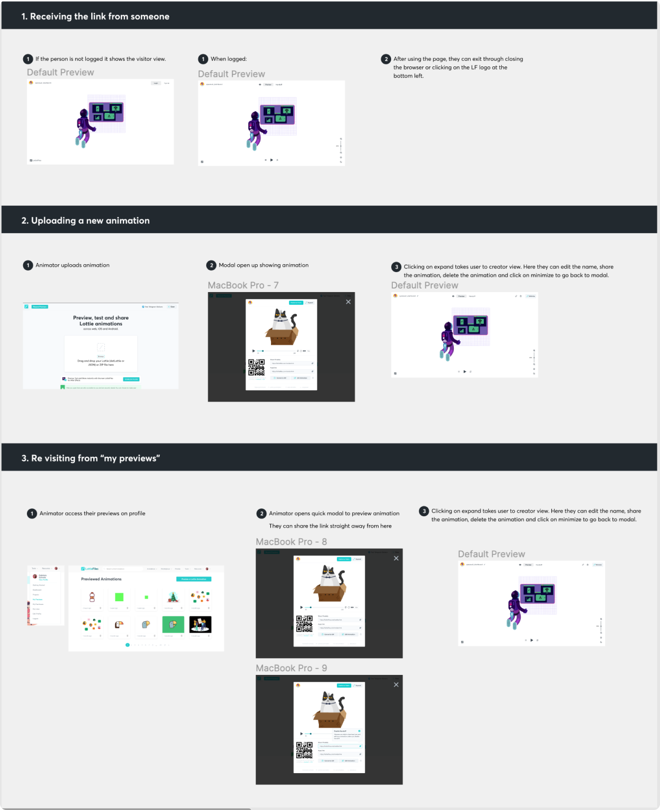
Three possible flows
Challenges and learning are always present in any design project. During the time I was involved in this feature I could map a few points to take with me to my career improvement
- Experimenting and pushing limits is absolutely key when you can’t find enough references to a similar solution.
- When feeling stuck and confused, don’t be afraid to take a step back.
- Involvement with developers is essential. I had to be in constant contact to validate ideas and check the technical constraints.
- File organization and neat handoffs facilitate a lot in the communication with developers. Understanding how they would build this page could also help me develop a better way to present how the design structure of this page works, especially thinking responsiveness.
We currently have this feature live in the LottieFiles platform and collecting metrics in order to understand more our users behaviors.
You can check the current page live
here.
Thank you!
© (2021) Made with ♡ in Berlin